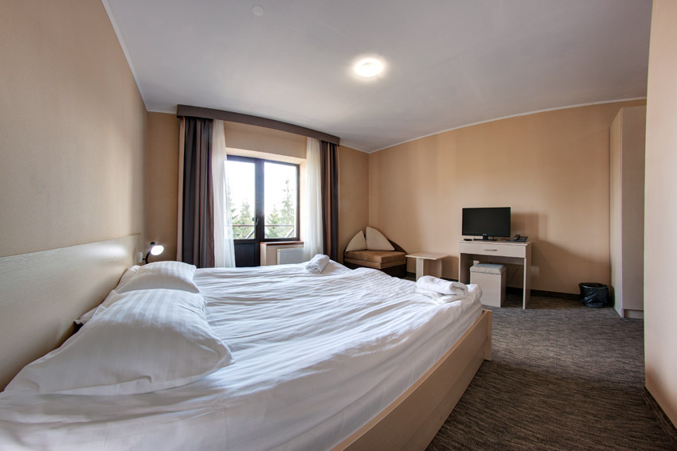
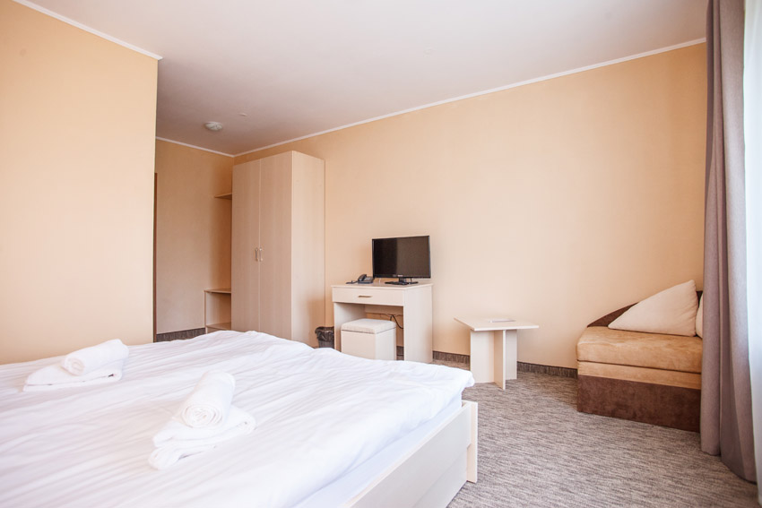

Стандартний двомісний
24 номери за опублікованим каталогом · двоспальне або два окремі ліжка · балкон із видом на Карпати

ЛОКАЦІЯ 02 · ЯБЛУНИЦЯ
Камінний лобі-бар, піца з печі на дровах і баня для повільнішого вечора.
Відчути локацію ↓ЯБЛУНИЦЯ · КАРПАТИ
Публічний опис SkiLandHouse Yablunytsia згадує ресторан-піцерію з піччю на дровах, лобі-бар з камінним залом і баню на дровах. Опис відстані до Буковеля, близько 7 км, також подано на сайті готелю.
Нижче наведені категорії та кількість номерів за опублікованим каталогом готелю. Актуальний склад, комплектацію й тарифи уточнюйте напряму.
ПРОЖИВАННЯ · ЯБЛУНИЦЯ
Опублікований каталог описує 24 двомісні стандарти та 2 одномісні економ-номери. Актуальність кількості треба підтвердити.
24 номери за опублікованим каталогом · двоспальне або два окремі ліжка · балкон із видом на Карпати
2 номери за опублікованим каталогом · балкон із видом на Карпати
Опис категорій та оснащення наведений за публічною сторінкою готелю ↗. Актуальний номерний фонд, комплектацію й тарифи уточнюйте напряму; сезонні ціни 2026/27 у матеріалах не підтверджені.
ФОТО ЛОКАЦІЇ · ЯБЛУНИЦЯ
Фото з офіційних сторінок SkiLandHouse. Права на повторне використання не підтверджені; матеріали показані лише в локальному демо.


ЗА СТОЛОМ
Ресторан-піцерія з піччю на дровах, за публічним описом готелю. Меню та графік роботи уточнюйте у закладу.
БІЛЯ КАМІНА
У камінному лобі-барі, за офіційним описом, можна скуштувати пиво «Бартік» власного виробництва. Актуальний асортимент уточнюйте на місці.
ПІСЛЯ ГІРСЬКОГО ДНЯ
У публічному описі зазначена баня на дровах площею 82 м², до 10 осіб. Актуальність параметрів та умови користування слід підтвердити.
ЗНАЙТИ ЛОКАЦІЮ
910 м над рівнем моря · приблизно 7 км до Буковеля за описом готелю.
Адреса, висота й відстань наведені за публічними матеріалами; актуальність слід підтвердити.
УМОВИ ПЕРЕБУВАННЯ
Поточні тарифи на сезон 2026/27 для цієї локації в наданих матеріалах не підтверджені.
Перейти до демо-запиту ↗